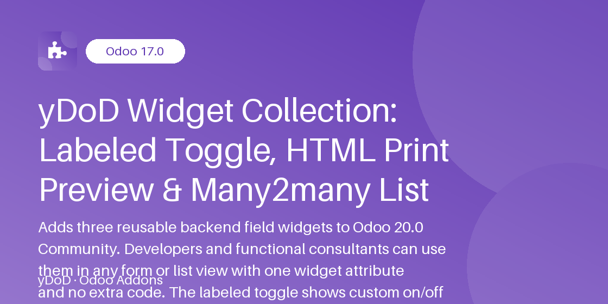

Related Modules
Work even better together with yDoD apps for Odoo 17.0.
Three drop-in field widgets for Odoo 20.0: a labeled boolean toggle, an HTML print preview with
“Save as PDF”, and a clickable Many2many / One2many list. One widget
attribute, zero Python, zero models, no external library.
Odoo 20.0 Community & Enterprise
· LGPL-3
· Depends only on web

Standard Odoo views ship with a plain checkbox for boolean fields, a rich-text editor for HTML fields and a cloud of colored tags for Many2many fields. These are fine for data entry, but they fall short when a form must read like a document: a status switch that says Active or Archived instead of a nameless checkbox, a contract body that looks like the paper page the customer will receive, or a list of related records that users can scan top to bottom and open in one click.
yDoD Widget Collection fills this gap with three native OWL 3 field widgets registered
in the standard field registry. You add them to any form or list view with a single
widget="..." attribute and a few options. No Python, no new models, no
menus, no settings page and no third-party JavaScript or PDF library are involved. The module only
grows the web.assets_backend bundle, so it is safe to declare as a dependency of your own
modules.
It is built for Odoo developers, integrators and functional consultants who customize Odoo 20.0 views (in module XML or in Developer mode) and want polished, consistent widgets without writing or maintaining their own components.
ydod_toggle_label for Boolean fieldsydod_html_print_preview for Html fieldsydod_many2many_list for Many2many and One2many fieldsA Bootstrap switch with your own on/off texts and colors, usable in forms and editable lists.
One button opens the browser print dialog with only the paper content, so users save a PDF without wkhtmltopdf.
HTML content renders in an isolated A4, A3, A5, Letter or Legal frame, portrait or landscape, untouched by form or dark-mode CSS.
Many2many and One2many records appear as a bulleted, numbered or plain list; each item opens its form in one click.
Set a limit and long lists fold behind a “+N more” link with “Show less” to collapse again, with no reload.
Widgets honor readonly and field groups; they add no RPC and write only through the loaded record.
Display names load with the parent record and the print frame is rebuilt only when the value changes.
Every default text is translatable and the SCSS adapts to the Odoo dark theme.
Replaces the plain checkbox of a Boolean field with a Bootstrap switch followed by a text that reflects the current state. Supported options:
on_label / off_label: texts shown next to the switch (defaults: On / Off, translatable).on_color / off_color: any CSS color applied to the switch and the text (defaults: Bootstrap success / secondary).label_position: right (default) or left.autosave: True (default) saves immediately like the core boolean_toggle; set False to wait for the form Save button.Works in form views and in editable or read-only list views. When the field is readonly the switch is disabled but the label still shows the state.
<field name="active" widget="ydod_toggle_label"
options="{'on_label': 'Active', 'off_label': 'Archived',
'on_color': '#198754', 'off_color': '#6c757d',
'label_position': 'right', 'autosave': False}"/>
<!-- in a list view -->
<list editable="bottom">
<field name="active" widget="ydod_toggle_label"
options="{'on_label': 'Yes', 'off_label': 'No'}"/>
</list>Shows an Html field (a computed contract body, a quotation note, a generated letter) as a white paper page inside a sandboxed iframe. The surrounding form, the backend theme and dark mode cannot alter the page, and scripts inside the content never run. Above the paper a small toolbar shows the page format and the Print / Save as PDF button, which opens the browser's native print dialog with only the paper content. An empty field displays Nothing to print and the button is disabled.
page_size: A4 (default), A3, A5, Letter or Legal.orientation: portrait (default) or landscape.title: document title used by the print dialog and the PDF file (default: the record display name).hide_button: True to show the paper only.<field name="comment" widget="ydod_html_print_preview"
options="{'page_size': 'A4', 'orientation': 'portrait',
'title': 'Partner notes', 'hide_button': False}"/>html editor field for editing and add a second occurrence of the field with this widget
for the preview.
Displays the linked records of a Many2many or One2many field as a vertical list instead of inline tags. Each item is a link that opens the record's form view. Display names arrive with the parent record, so the widget performs no extra request per item or per row.
style: bullet (default), number or plain.limit: show only the first N items and a +N more link; Show less collapses again (0 = unlimited).open_target: current (default) opens in the main window, new opens in a dialog.no_open: True renders plain text without links.<field name="category_id" widget="ydod_many2many_list"
options="{'style': 'bullet', 'limit': 3,
'open_target': 'current', 'no_open': False}"/>When the database is created with demo data, the module adds a yDoD Widgets Demo page to the contact form (Contacts → any partner) showing the Status toggle, the Tags list and the notes print preview, and an Active toggle column to the contact list. Production installs without demo data get no view change at all. Server-side tests validate the view architecture, asset bundling, field groups and manifest, and a browser test checks that the web client boots with the widgets registered.
| Widget | Option | Default |
|---|---|---|
| ydod_toggle_label | on_label / off_label | On / Off |
| ydod_toggle_label | label_position / autosave | right / True |
| ydod_html_print_preview | page_size / orientation | A4 / portrait |
| ydod_html_print_preview | title | record display name |
| ydod_many2many_list | style / limit | bullet / 0 (unlimited) |
| ydod_many2many_list | open_target / no_open | current / False |
web module is required; no
settings or user groups need to be configured.widget="ydod_toggle_label" and, optionally,
options="{'on_label': '...', 'off_label': '...'}" plus colors, label position or autosave.widget="ydod_html_print_preview" with the page
size, orientation and title you need. Users then click Print / Save as PDF and choose
“Save as PDF” in the browser dialog.widget="ydod_many2many_list"
with style and limit. Users click an item to open it and use
+N more / Show less to expand or collapse.ydod_web_widget_collection to the
depends of your module and use the widgets in its views without copying any JavaScript.No. It is a pure asset bundle: no model, no menu, no action, no security file, no cron. Apps lists it under the Hidden category and nothing changes in your database structure.
Exactly the same as without the widgets. Read and write stay governed by the model access and the
field groups; a field restricted to Administrators stays hidden from other users, and readonly
fields render a disabled switch.
No. The Print / Save as PDF button opens the browser's native print dialog on the paper frame only. Choose “Save as PDF” as the destination in Chrome, Edge, Firefox or Safari.
Yes. The widgets have no server-side logic and no company-dependent data. They show whatever records the current user and company context already loaded in the view.
The labeled toggle is designed for form and list views (editable or not). The print preview and the Many2many list are meant for form views, where there is room for a paper page or a vertical list.
The assets and the demo views are removed. Views in other modules that still reference a yDoD widget fall back to Odoo's default widget for the field type, and no data is lost.
Questions about installation, options or integration in your own views are welcome. Need a fourth widget, a different list layout or a print preview with your company header? Custom development and adaptation for your project are available on request.
Odoo 20.0 Community & Enterprise · LGPL-3
© Dody Ahmad Kusuma Jaya — yDoD · profile.dodyakj.online · dodyakj@gmail.com
Work even better together with yDoD apps for Odoo 17.0.